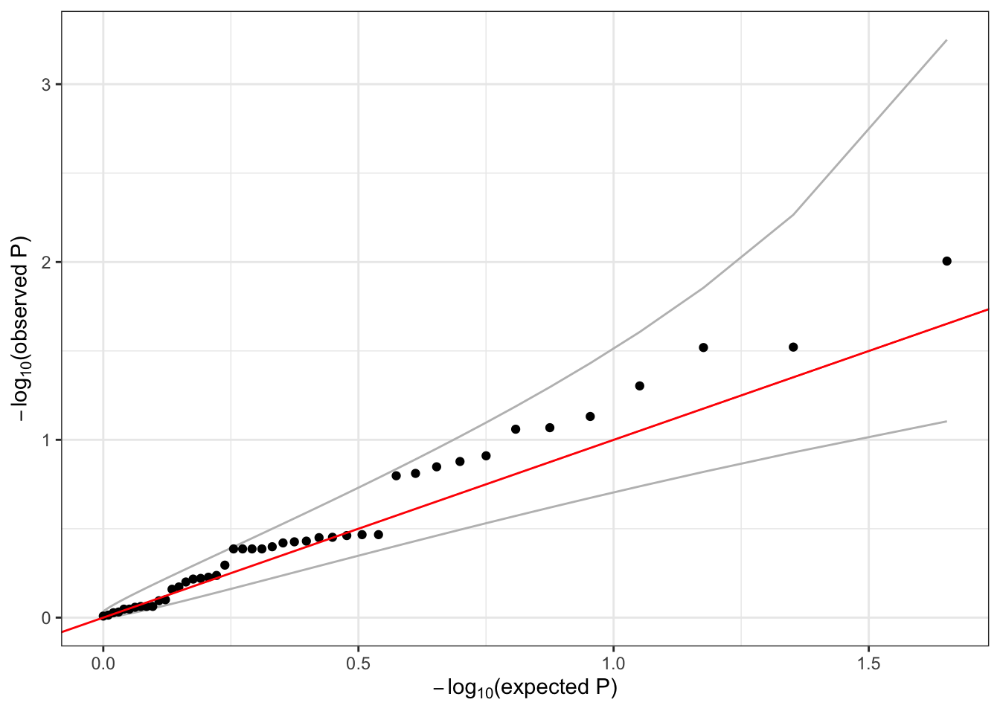

7 Aggregate tests
7.1 Aggregate unit for association testing exercise
Now you can proceed to an assocation testing exercise. You will be using a slightly different gene-based aggregation unit for the assocation testing exercise. In this exercise, the genic units include SNP variants from all chromosomes (no indels, and not just chromosome 22 as before), each genic unit is expanded to include the set of SNPs falling within a GENCODE-defined gene along with 20 kb flanking regions upstream and downstream of that range, and the positions are in genome build hg19 (so that the annotation positions are consistent with the build used for genotyping data in the workshop). This set of aggregation units is not filtered by CADD score or consequence.
As before, the aggregation units are defined in an R dataframe. Each row of the dataframe specifies a variant (chr, pos, ref, alt) and the group identifier (group_id) it is a part of. Mutiple rows with different group identifiers can be specified to assign a variant to different groups (a variant can be assigned to mutiple genes).
Begin by loading the aggregation units:
##
## Attaching package: 'dplyr'## The following objects are masked from 'package:stats':
##
## filter, lag## The following objects are masked from 'package:base':
##
## intersect, setdiff, setequal, unionrepo_path <- "https://github.com/smgogarten/GENESIS_workshop_2026/raw/main"
if (!dir.exists("data")) dir.create("data")
aggfile <- "data/variants_by_gene.rds"
if (!file.exists(aggfile)) download.file(file.path(repo_path, aggfile), aggfile)
aggunit <- readRDS(aggfile)
names(aggunit)## [1] "group_id" "chr" "pos" "ref" "alt"## # A tibble: 6 × 5
## group_id chr pos ref alt
## <chr> <fct> <int> <chr> <chr>
## 1 ENSG00000131591.13 1 1025045 C T
## 2 ENSG00000169962.4 1 1265550 C T
## 3 ENSG00000205090.4 1 1472676 T C
## 4 ENSG00000171603.12 1 9788518 G A
## 5 ENSG00000204624.6 1 11593461 C T
## 6 ENSG00000270914.1 1 12068870 G A# an example of variant that is present in mutiple groups
mult <- aggunit %>%
group_by(chr, pos) %>%
summarise(n=n()) %>%
filter(n > 1)## `summarise()` has regrouped the output.
## ℹ Summaries were computed grouped by chr and pos.
## ℹ Output is grouped by chr.
## ℹ Use `summarise(.groups = "drop_last")` to silence this message.
## ℹ Use `summarise(.by = c(chr, pos))` for per-operation grouping
## (`?dplyr::dplyr_by`) instead.## Joining with `by = join_by(chr, pos)`## # A tibble: 2 × 5
## group_id chr pos ref alt
## <chr> <fct> <int> <chr> <chr>
## 1 ENSG00000187952.8 1 21742183 G A
## 2 ENSG00000227001.2 1 21742183 G A7.2 Association testing with aggregate units
We can run a burden test or SKAT on each of these units using assocTestAggregate. We define a SeqVarListIterator object where each list element is an aggregate unit. The constructor expects a GRangesList, so we use the function aggregateGRangesList to quickly convert our single dataframe to the required format. This function can account for multiallelic variants (the same chromosome, position, and ref, but different alt alleles).
#remotes::install_github("UW-GAC/analysis_pipeline/TopmedPipeline")
#library(TopmedPipeline)
library(SeqVarTools)## Loading required package: SeqArray## Loading required package: gdsfmtlibrary(GENESIS)
aggregateGRangesList <- function(variants) {
stopifnot(all(c("group_id", "chr", "pos") %in% names(variants)))
groups <- unique(variants$group_id)
cols <- setdiff(names(variants), c("group_id", "chr", "pos"))
GenomicRanges::GRangesList(lapply(setNames(groups, groups), function(g) {
x <- variants[variants$group_id == g,]
gr <- GenomicRanges::GRanges(seqnames=x$chr,
ranges=IRanges::IRanges(start=x$pos, width=1))
GenomicRanges::mcols(gr) <- x[,cols]
gr
}))
}
gdsfile <- "data/1KG_phase3_subset_chr1.gds"
if (!file.exists(gdsfile)) download.file(file.path(repo_path, gdsfile), gdsfile)
gdsfmt::showfile.gds(closeall=TRUE) # make sure file is not already open
gds <- seqOpen(gdsfile)
annotfile <- "data/sample_phenotype_pcs.rds"
if (!file.exists(annotfile)) download.file(file.path(repo_path, annotfile), aggfile)
annot <- readRDS(annotfile)
seqData <- SeqVarData(gds, sampleData=annot)
# subset to chromosome 1
aggunit1 <- filter(aggunit, chr == 1)
aggVarList <- aggregateGRangesList(aggunit1)
length(aggVarList)## [1] 127## [1] "ENSG00000131591.13" "ENSG00000169962.4" "ENSG00000205090.4"
## [4] "ENSG00000171603.12" "ENSG00000204624.6" "ENSG00000270914.1"## GRanges object with 1 range and 2 metadata columns:
## seqnames ranges strand | ref alt
## <Rle> <IRanges> <Rle> | <character> <character>
## [1] 1 1025045 * | C T
## -------
## seqinfo: 23 sequences from an unspecified genome; no seqlengthsAs in the previous section, we must load the null model before running the association test.
if (!exists("nullmod")) {
nmfile <- "data/null_mixed_model.rds"
if (!file.exists(nmfile)) download.file(file.path(repo_path, nmfile), nmfile)
nullmod <- readRDS(nmfile)
}
assoc <- assocTestAggregate(iterator, nullmod, test="Burden", AF.max=0.1, weight.beta=c(1,1))## # of selected samples: 100## Using 8 CPU cores## [1] "results" "variantInfo"## n.site n.alt n.sample.alt Score Score.SE Score.Stat
## ENSG00000131591.13 0 0 0 NA NA NA
## ENSG00000169962.4 0 0 0 NA NA NA
## ENSG00000205090.4 1 1 1 -0.08049928 0.08674100 -0.9280419
## ENSG00000171603.12 0 0 0 NA NA NA
## ENSG00000204624.6 0 0 0 NA NA NA
## ENSG00000270914.1 1 1 1 -0.05350310 0.08061794 -0.6636624
## Score.pval Est Est.SE PVE
## ENSG00000131591.13 NA NA NA NA
## ENSG00000169962.4 NA NA NA NA
## ENSG00000205090.4 0.3533858 -10.698999 11.52857 0.009569569
## ENSG00000171603.12 NA NA NA NA
## ENSG00000204624.6 NA NA NA NA
## ENSG00000270914.1 0.5069064 -8.232193 12.40419 0.004893862## [1] "ENSG00000131591.13" "ENSG00000169962.4" "ENSG00000205090.4"
## [4] "ENSG00000171603.12" "ENSG00000204624.6" "ENSG00000270914.1"## variant.id chr pos ref alt allele.index n.obs freq MAC weight
## 1 5 1 1472676 T C 1 100 0.005 1 1library(ggplot2)
qqPlot <- function(pval) {
pval <- pval[!is.na(pval)]
n <- length(pval)
x <- 1:n
dat <- data.frame(obs=sort(pval),
exp=x/n,
upper=qbeta(0.025, x, rev(x)),
lower=qbeta(0.975, x, rev(x)))
ggplot(dat, aes(-log10(exp), -log10(obs))) +
geom_line(aes(-log10(exp), -log10(upper)), color="gray") +
geom_line(aes(-log10(exp), -log10(lower)), color="gray") +
geom_point() +
geom_abline(intercept=0, slope=1, color="red") +
xlab(expression(paste(-log[10], "(expected P)"))) +
ylab(expression(paste(-log[10], "(observed P)"))) +
theme_bw()
}
qqPlot(assoc$results$Score.pval)
7.3 Exercise
Since we are working with a subset of the data, many of the genes listed in group_id have a very small number of variants. Create a new set of units based on position rather than gene name, using the function aggregateGRanges. Then run SKAT using those units and a SeqVarRangeIterator.
aggregateGRanges <- function(groups) {
stopifnot(all(c("group_id", "chr", "start", "end") %in% names(groups)))
cols <- setdiff(names(groups), c("group_id", "chr", "start", "end"))
gr <- GenomicRanges::GRanges(seqnames=groups$chr,
ranges=IRanges::IRanges(start=groups$start, end=groups$end))
names(gr) <- groups$group_id
GenomicRanges::mcols(gr) <- groups[,cols]
gr
}